PROJECT 02 — DETAIL PAGE
DAYLONG
HYDRA SERUM.
아침에 바른 수분, 퇴근길까지.
속건조로 오후마다 불편한 20대 직장인의 하루를 따라가는 수분 세럼 상세페이지입니다.
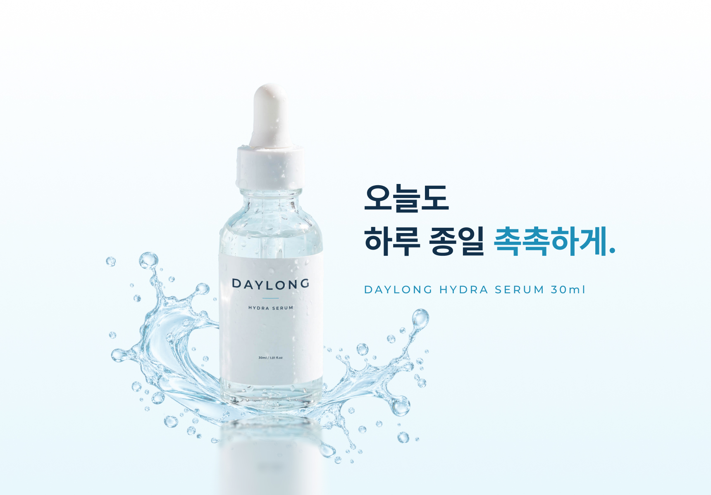
01 / OVERVIEW
OVERVIEW.
성분을 나열하는 대신, 하루를 보여 주기로 했습니다.
수분 세럼 상세페이지는 대부분 성분과 효능을 나열하는 데서 시작합니다. DAYLONG은 '오전엔 괜찮다가 오후 3시면 땅기는' 직장인의 하루를 이야기의 축으로 삼았습니다. 아침 08:00부터 퇴근길 20:00까지의 시간 흐름으로 먼저 공감을 이끌어낸 뒤, 성분과 보습 지속력 데이터, 제형 컷을 순차적으로 배치해 감성적 공감에서 이성적 신뢰로 자연스럽게 이어지도록 구성했습니다.
- 타깃 — 사무실에서 하루를 보내는 20대 속건조 직장인
- 콘셉트 — 아침 한 번으로 퇴근길까지 이어지는 수분
- 규격 — 860px 상세페이지, 11개 섹션 (Figma 2배 1720px 작업)
02 / STORY
STORY.
공감 → 해결 → 근거 → 신뢰 순서로, 끝까지 스크롤하게 만드는 흐름을 먼저 설계했습니다.
-
01
공감
“오후 3시, 이런 적 있으시죠?” 볼 땅김, 화장 들뜸, 각질 세 가지 고민을 체크리스트로 보여 줍니다.
-
02
해결
제품을 소개한 뒤, 같은 인물의 08:00 · 15:00 · 20:00 장면으로 하루 내내 이어지는 수분을 보여 줍니다.
-
03
근거
핵심 성분 3가지와 12시간 수분 그래프, 사용자 설문 수치로 ‘왜 오래가는지’를 설명합니다.
-
04
신뢰
텍스처, 사용법, 후기, 제품 정보 고시까지 구매 직전에 확인하는 정보를 차례로 정리했습니다.
03 / DESIGN SYSTEM
DESIGN.
COLOR
- NAVY#12304A · 제목, 데이터 섹션
- DEEP AQUA#1F8FB8 · 강조 단어
- AQUA#4FC3E8 · 아이콘, 그래프
- LIGHT AQUA#E8F7FC · 섹션 배경
- GRAY#F3F5F7 · 카드, 사용법
- WHITE#FFFFFF · 기본 배경
TYPOGRAPHY
Pretendard
TEXT — 제목, 본문 (8단계 텍스트 스타일)
Montserrat
LABEL — 브랜드명, 영문 아이브로우, 시간
물빛 아쿠아를 기본으로, 가장 설득해야 하는 데이터 섹션에만 진한 Navy를 써서 스크롤하다 멈추게 했습니다. 타임라인 사진은 아침 화이트 → 오후 아쿠아 → 밤 네이비로 흘러가, 브랜드 색 자체가 하루의 시간이 되도록 맞췄습니다.
04 / DETAIL PAGE
DETAIL.
실제 쇼핑몰과 같은 860px 폭으로 전체 상세페이지를 그대로 보여 드립니다.
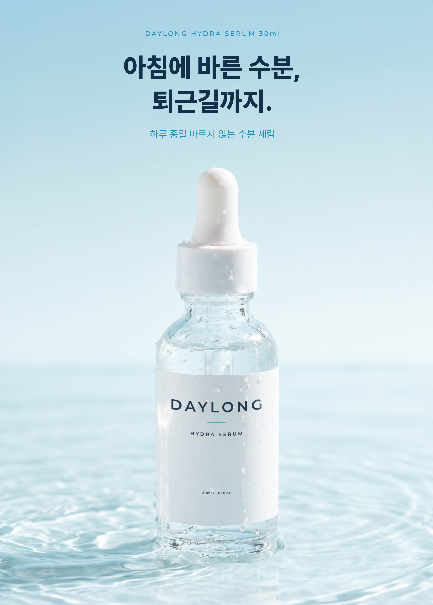
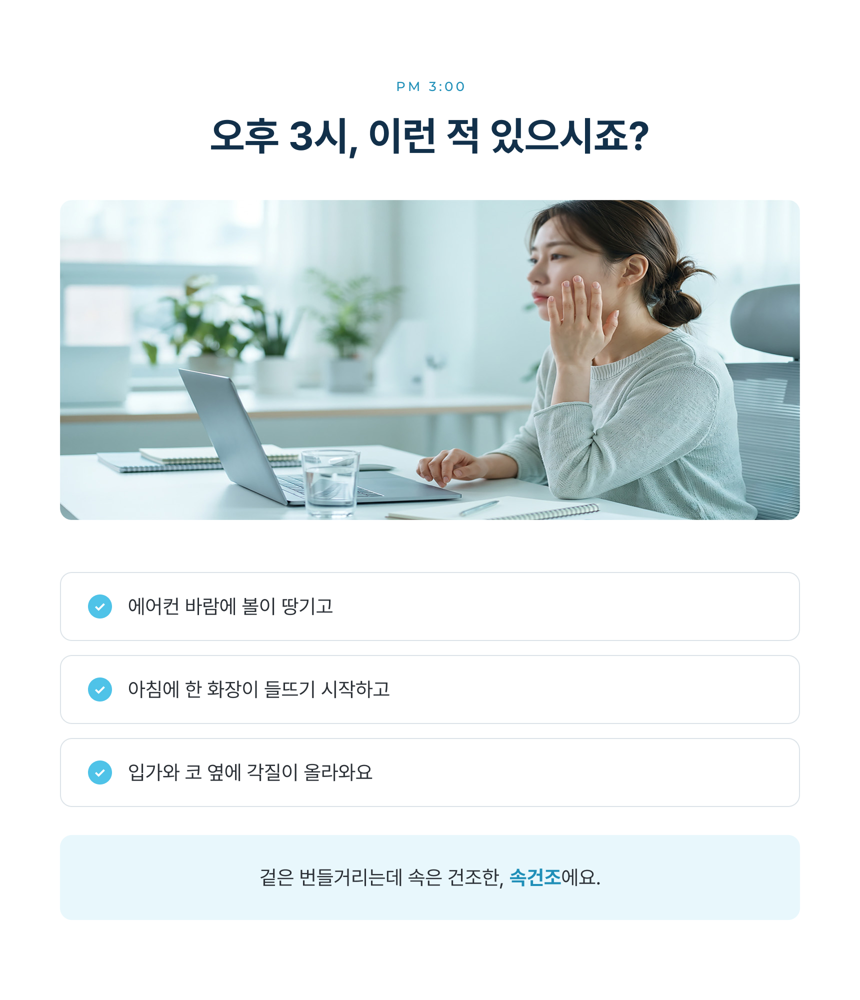
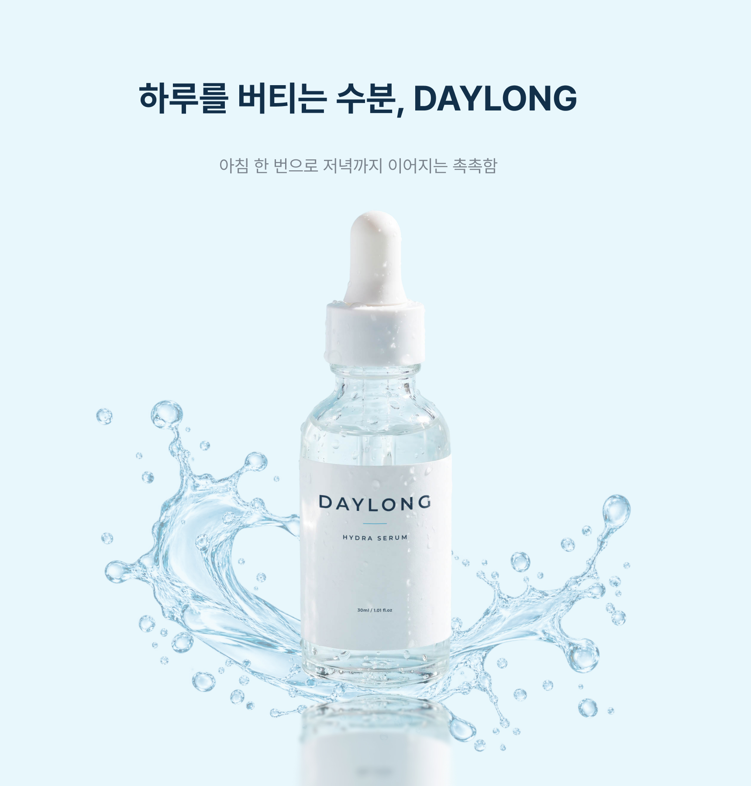
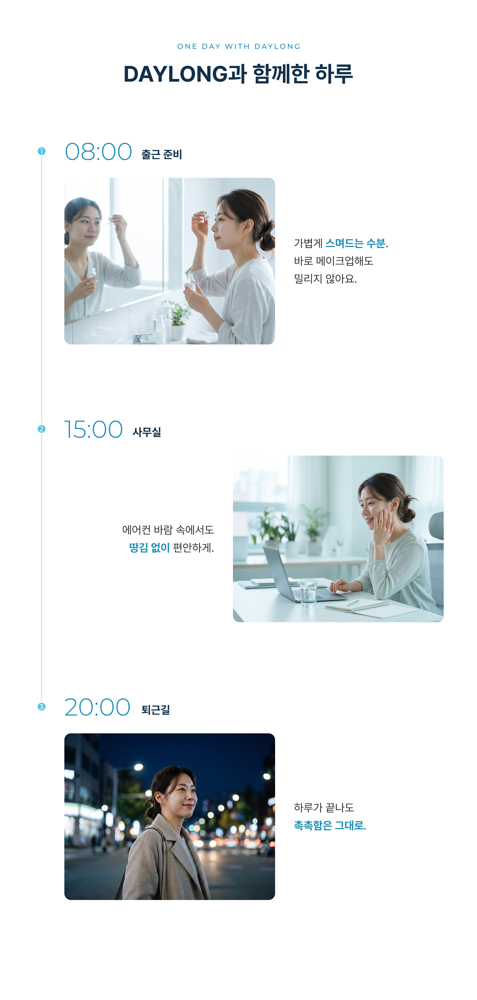
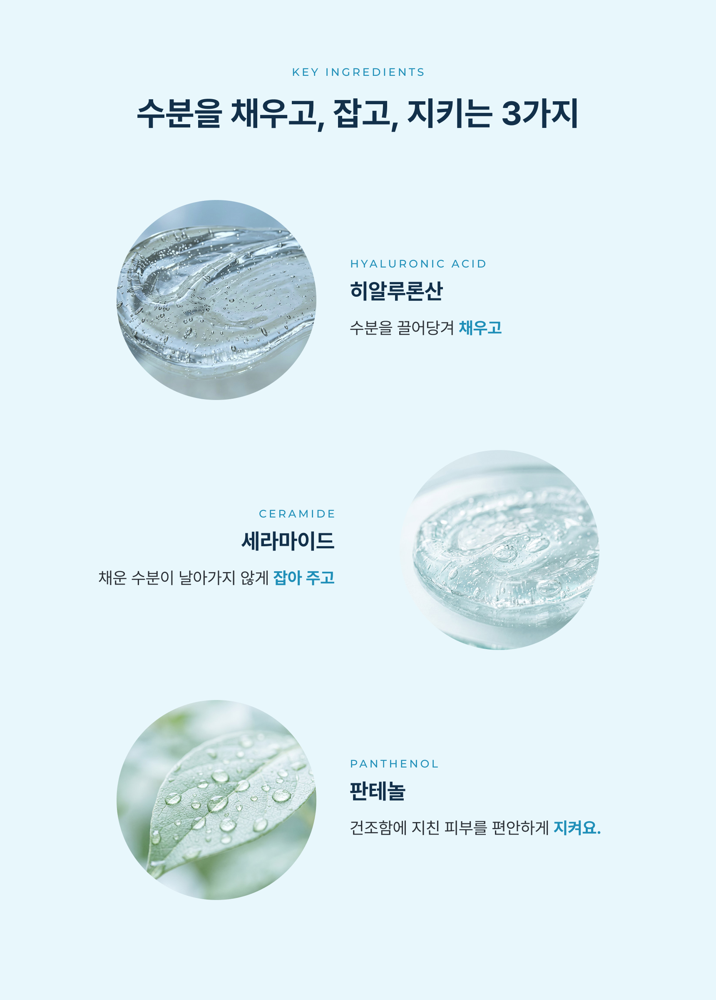
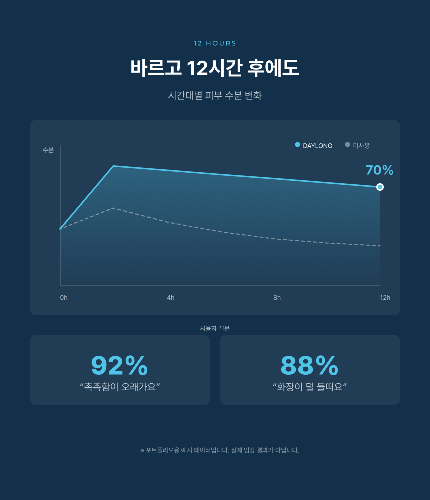
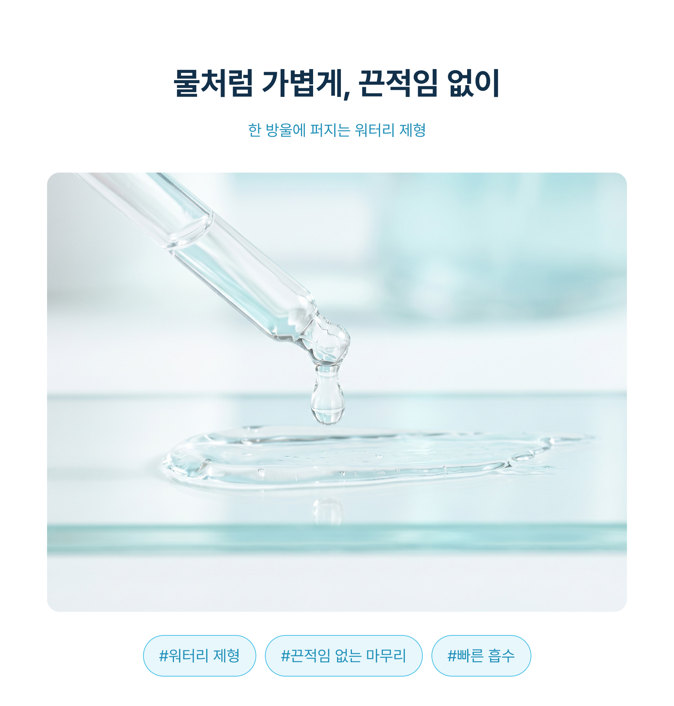
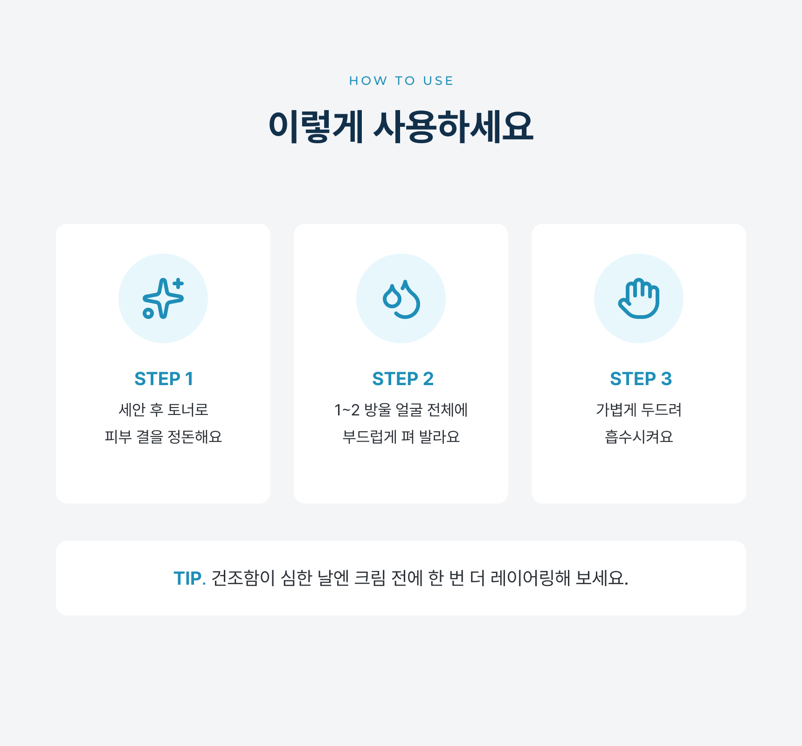
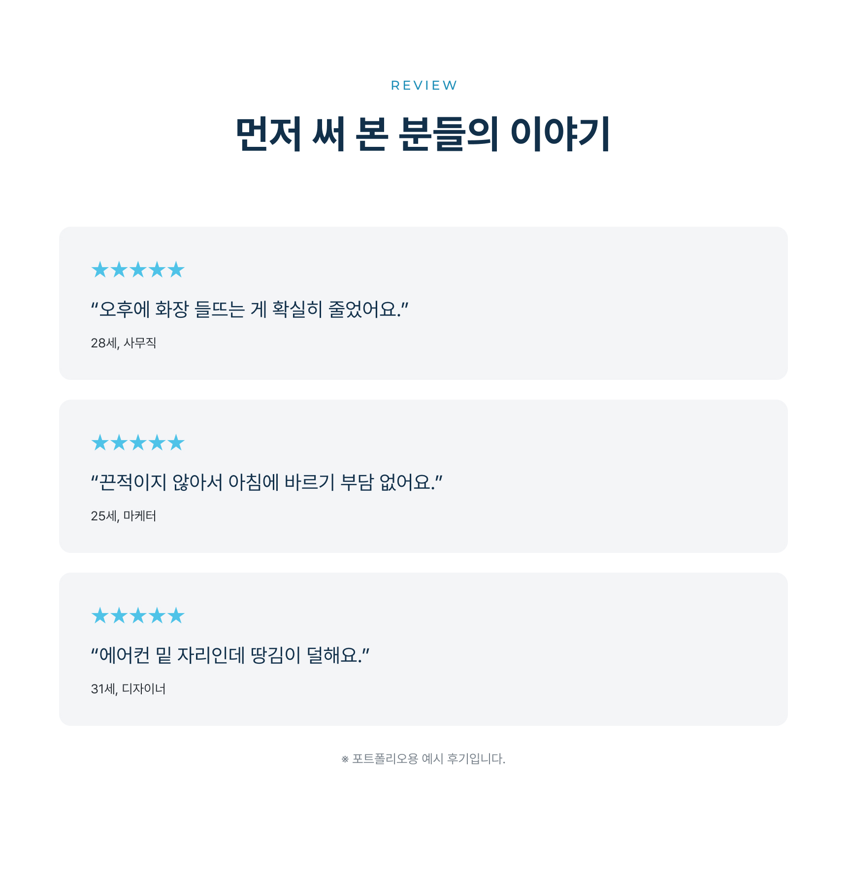
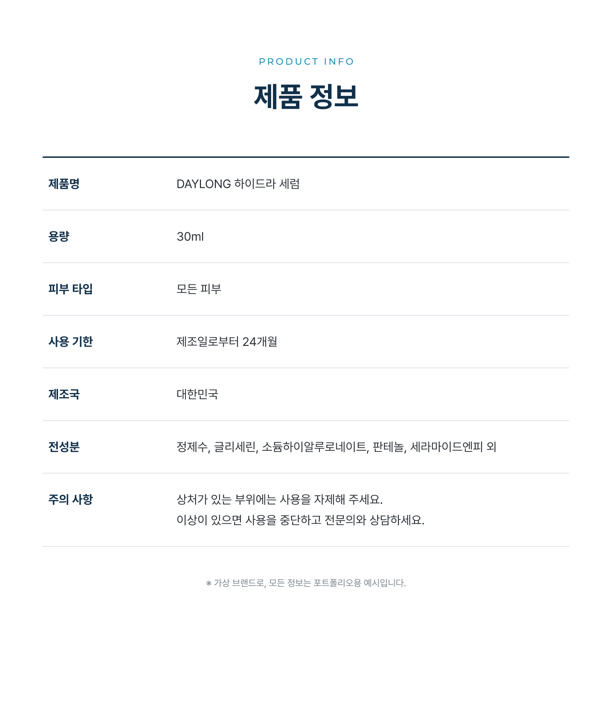
05 / PROCESS
PROCESS.
-
01
기획
타깃과 콘셉트를 정하고, 11개 섹션의 역할과 카피를 기획서로 정리한 뒤 와이어프레임을 만들었습니다.
-
02
이미지
AI로 제품 컷과 장면을 생성하고, 브랜드 톤에 맞지 않는 결과는 프롬프트를 고쳐 다시 만들었습니다.
-
03
합성
Photoshop에서 라벨을 직접 디자인해 병 곡면에 맞춰 합성하고, 누끼·배경 확장·크롭으로 다듬었습니다.
-
04
디자인
Figma에 색상·텍스트 스타일을 먼저 만들고, 자동 레이아웃으로 카드와 표를 구성해 수정이 쉽게 했습니다.
06 / DESIGN POINTS
POINTS.
-
POINT 01
같은 자리, 다른 표정
02 공감과 04 타임라인 15:00 장면을 같은 사무실, 같은 구도로 맞췄습니다.
찡그린 얼굴이 미소로 바뀌는 전·후 비교만으로 제품 효과를 전달합니다.
-
POINT 02
제목과 짝을 이루는 문장
성분 설명이 따로 노는 정보가 되지 않도록 고민했습니다.
제목의 ‘채우고, 잡고, 지키는’을 세 성분의 문장 끝에 그대로 이어 붙여 강조했습니다.
-
POINT 03
고민이 해결되는 후기
후기가 막연한 칭찬으로 끝나면 설득력이 약합니다.
세 후기를 02 공감의 고민(화장 들뜸, 끈적임, 에어컨 땅김)과 하나씩 짝지었습니다.
-
POINT 04
과장하지 않는 수치
가상 브랜드의 그래프와 후기가 실제 결과처럼 보이면 안 됩니다.
수치마다 기준(사용자 설문)을 적고, ‘예시 데이터·예시 후기’임을 모두 표기했습니다.
이미지: Google Gemini · ChatGPT로 생성 후 Photoshop 합성·보정 / 아이콘: Lucide (ISC) / 폰트: Pretendard, Montserrat (SIL OFL). DAYLONG은 포트폴리오를 위한 가상 브랜드입니다.
WHAT I
LEARNED.
독학으로 다양한 플랫폼의 레퍼런스를 분석하며 처음부터 끝까지 완성해 본 상세페이지입니다. 생성형 AI로 콘셉트에 맞는 이미지를 제작하고 선별하면서, 예쁜 화면보다 흐름을 잡는 기준이 중요하다는 걸 체감했습니다. 기초 자격증 이후 잊고 있던 포토샵 기능들도 필요한 부분을 하나씩 다시 찾아 적용하며 실전 감각을 되살릴 수 있었습니다.
© 2026 Soomln. All rights reserved.
BACK TO TOP ↑